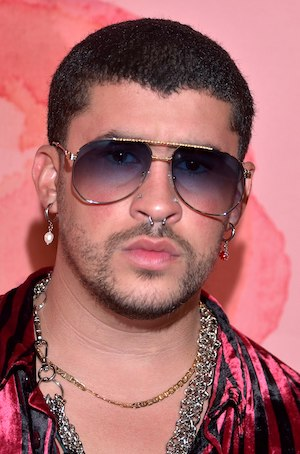

バッドバニー

Benito Antonio Martínez Ocasio, better known artistically as Bad Bunny, is an artist who has been very popular in recent years, especially after his last performance at the Super Bowl, making it the most-watched Super Bowl halftime show worldwide to date.
He has generated much discussion because throughout his artistic career he has elevated Latin American culture and demonstrated to the world that Latin Americans are not a problem for society, but rather that they have contributed greatly to American society.
I am personally a big fan of his music since I have been listening to him for almost 10 years in total since I was a high school student and I have seen how his style has evolved playing genres such as salsa, trap, reggaeton, bachata, merengue, etc.